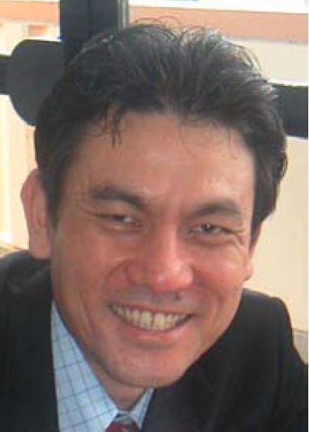
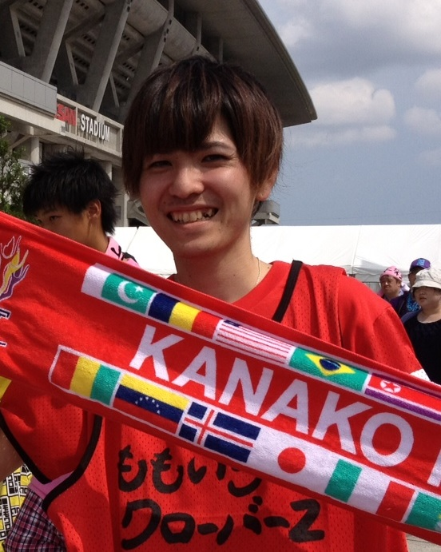

大井ゼミ
大井 肇（おおい はじめ）教授
専門分野／企業情報論
担当科目／情報処理概論、企業情報論、プログラミング他
嵩原 盛之
大井ゼミでは、ITパスポート試験や基本情報技術者試験といった資格取得に向けて日々勉強しています。この他にもこれから社会にでる私達がしっかりと生き抜いていくためのとても大事なお話を大井先生が毎回してくれるので、ゼミの時間に座っているだけでも「人間力」が高まります(*ﾟ▽ﾟ*)
また大井ゼミは縦のつながりをとても大切にしており、毎月の誕生日会やペンション合宿、夏のBBQ大会そして学園祭などの数多くのイベントを通してOB・OGの先輩方と交流する機会もたくさんあるため、コミュニケーション能力や礼儀など社会に出て必要不可欠となるスキルもいつの間にか自然と身につきます。
また大井先生は私達ゼミ生ひとりひとりの事を真剣に考えてくれ、どんな時でも、どんな問題でも気軽に相談に乗ってくれます。就職活動の面においては、就活の極意を伝授してくれたり、面接の練習にも付き合ってくれます。こんな雰囲気のゼミなので、ゼミ生同士も就職試験対策の勉強会を自主的に開催しながら、みんなで協力し合いそして励ましあいながら、就職活動に全力で取り組んでいます。そのお蔭もあって私自身も４月の初旬にはかねてより希望していた企業から内定をもらうことができました。こんなふうに大井ゼミは、楽しみながら、きちんと成果を形にすることのできる素晴らしいゼミです(´▽｀)
卒業論文
卒業生
- 儀保 幸 「卓球チームマネジメントシステムの構築」
- 仲本 美郷 「体重増加支援デブエットアプリの構築」
- 大城 英祐 「沖縄旅行の意思決定支援サイトの構築」
- 平良 悟志 「PHPによる簿記e-learningシステム」
- 仲眞 研人 「Androidによるカープール支援システムの構築」
- 平安山 夏奈 「認知症看護家族コミュニティサイト」
- 知花 彩那 「地域活動支援システムの構築」
- 玉城 裕太郎 「沖国生のための就活支援サイト」
- 比嘉 美与好 「エステルーム「Chura」の宣伝サイトの構築」
- 大城 亜沙美 「那覇・南風原クリーンセンター支援システム」
- 高良 京花 「観光支援ウェブサイトの構築」
- 田崎 江利奈 「物々交換システムの構築」
- 大塚 学 「ウェディング支援システムの構築」
- 上原 千明 「国際交流支援システムの構築」
- 川端 菜緒 「ARを用いた新築住宅可視化ツールの構築」
- 喜屋武 慶大 「ワークショップ支援システムによるまちづくり」
- 嵩原 盛之 「アントレプレナー支援サイトの構築」
- 渡嘉敷 宗士 「マラソンサポートアプリの構築」
- 國吉 真吾 「茅原書藝会支援システム構築」